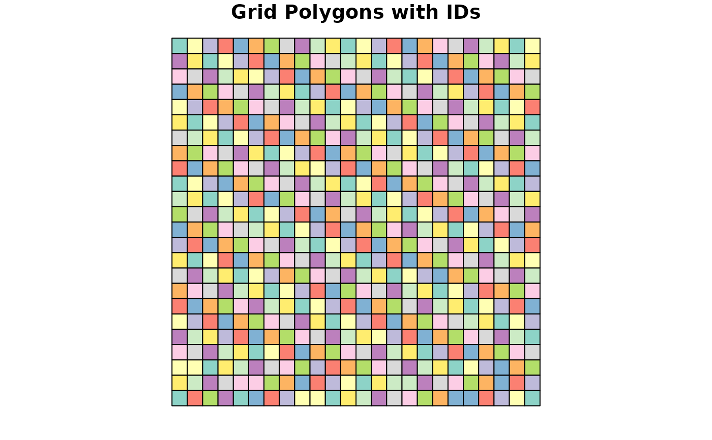
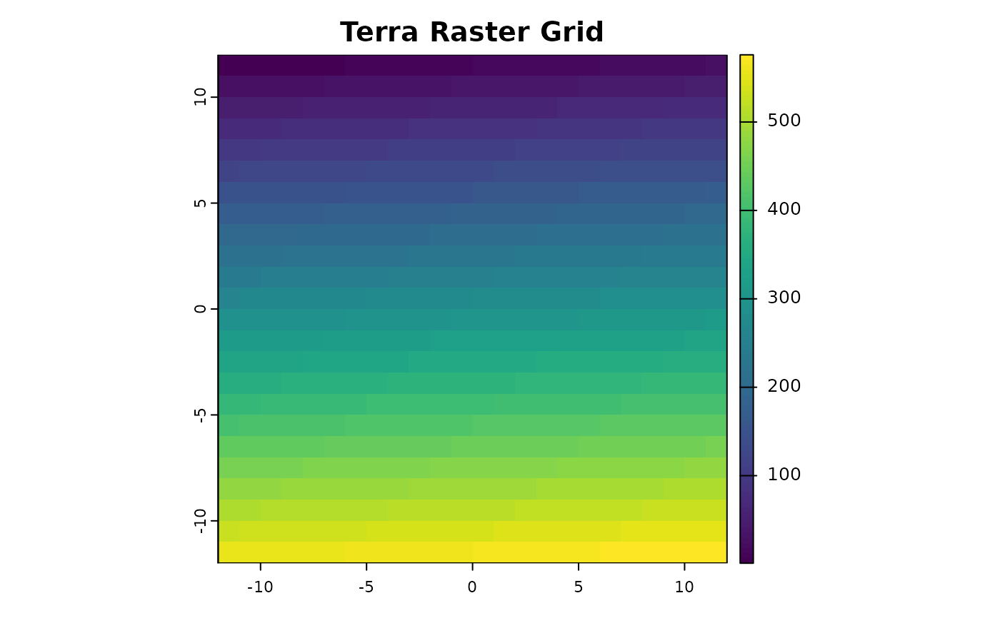

This function generates a spatial grid over a geographic extent and assigns grid IDs to points.
It also computes cell centroids and, for geographic grids (in degrees or minutes), a mapsheet code.
Finally, it summarizes specified columns within each grid cell while preserving additional metadata
provided via extra_cols.
Usage
generate_grid(
data,
x_col = "x",
y_col = "y",
grid_size = 0.5,
sum_col_range = NULL,
extra_cols = NULL,
crs_epsg = 4326,
unit = c("deg", "min", "sec", "m")
)Arguments
- data
A data frame containing point data with x and y coordinates.
- x_col
Character. Column name for x-coordinates (default: "x").
- y_col
Character. Column name for y-coordinates (default: "y").
- grid_size
Numeric. Size of the grid cells. For geographic data (EPSG:4326) this is in degrees.
- sum_col_range
Numeric vector. Range of columns to summarize within each grid cell.
- extra_cols
Character vector of additional columns to retain in the output (optional).
- crs_epsg
Numeric. EPSG code for the coordinate reference system (default: 4326).
- unit
Character. One of "deg", "min", "sec", or "m". For geographic data use "deg" (default).
Value
A list containing:
grid: terra raster object of the generated grid with unique grid IDs.grid_sf: sf object of the grid as polygons, with added centroid coordinates and (if applicable) mapsheet codes.block_sp: Data frame summarizing grid cell contents (including extra_cols if provided).
Examples
# Simulated Example for generate_grid
set.seed(123)
data <- data.frame(
x = runif(100, -10, 10),
y = runif(100, -10, 10),
species1 = rpois(100, 5),
species2 = rpois(100, 3),
recordedBy = sample(LETTERS, 100, replace = TRUE)
)
# Generate grid with grid cells of size 1 degree,
# summarizing species counts (columns 3 and 4)
# and retaining the 'recordedBy' metadata.
grid_result <- generate_grid(
data,
x_col = "x",
y_col = "y",
grid_size = 1,
sum_col_range = 3:4,
extra_cols = "recordedBy",
unit = "deg"
)
# Inspect the summarized block spatial data
print(grid_result$block_sp)
#> grid_id centroid_lon centroid_lat mapsheet recordedBy species1 species2
#> 1 104 -4.5 -7.5000908 W005S08BB V 6 2
#> 2 108 -0.5 -7.5000908 W001S08BB Z 3 3
#> 3 110 1.5 -7.5000908 E001S08BB W 5 3
#> 4 116 7.5 -7.5000908 E007S08BB E 6 4
#> 5 130 -2.5 -6.5000796 W003S07BB T 6 2
#> 6 132 -0.5 -6.5000796 W001S07BB X 2 1
#> 7 133 0.5 -6.5000796 E000S07BB R 5 10
#> 8 135 2.5 -6.5000796 E002S07BB Q 0 2
#> 9 149 -7.5 -5.5000681 W008S06BB J 4 1
#> 10 149 -7.5 -5.5000681 W008S06BB P 6 2
#> 11 151 -5.5 -5.5000681 W006S06BB H 4 7
#> 12 152 -4.5 -5.5000681 W005S06BB J 9 2
#> 13 154 -2.5 -5.5000681 W003S06BB S 8 5
#> 14 162 5.5 -5.5000681 E005S06BB L 4 2
#> 15 163 6.5 -5.5000681 E006S06BB D 4 0
#> 16 166 9.5 -5.5000681 E009S06BB L 6 4
#> 17 173 -7.5 -4.5000562 W008S05BB P 4 7
#> 18 179 -1.5 -4.5000562 W002S05BB A 5 3
#> 19 186 5.5 -4.5000562 E005S05BB O 3 4
#> 20 190 9.5 -4.5000562 E009S05BB N 2 1
#> 21 197 -7.5 -3.5000440 W008S04BB T 5 2
#> 22 204 -0.5 -3.5000440 W001S04BB I 3 3
#> 23 207 2.5 -3.5000440 E002S04BB Q 6 1
#> 24 208 3.5 -3.5000440 E003S04BB K 2 2
#> 25 208 3.5 -3.5000440 E003S04BB P 3 4
#> 26 208 3.5 -3.5000440 E003S04BB U 9 2
#> 27 210 5.5 -3.5000440 E005S04BB W 9 0
#> 28 220 -8.5 -2.5000316 W009S03BB M 8 1
#> 29 223 -5.5 -2.5000316 W006S03BB K 7 7
#> 30 224 -4.5 -2.5000316 W005S03BB V 9 2
#> 31 226 -2.5 -2.5000316 W003S03BB L 10 4
#> 32 232 3.5 -2.5000316 E003S03BB C 2 1
#> 33 234 5.5 -2.5000316 E005S03BB S 5 3
#> 34 235 6.5 -2.5000316 E006S03BB J 5 2
#> 35 247 -5.5 -1.5000190 W006S02BB M 7 7
#> 36 251 -1.5 -1.5000190 W002S02BB F 6 1
#> 37 254 1.5 -1.5000190 E001S02BB V 3 3
#> 38 258 5.5 -1.5000190 E005S02BB J 10 2
#> 39 258 5.5 -1.5000190 E005S02BB R 1 2
#> 40 260 7.5 -1.5000190 E007S02BB B 5 2
#> 41 262 9.5 -1.5000190 E009S02BB L 8 5
#> 42 270 -6.5 -0.5000063 W007S01BB M 7 2
#> 43 275 -1.5 -0.5000063 W002S01BB C 9 9
#> 44 275 -1.5 -0.5000063 W002S01BB H 3 7
#> 45 285 8.5 -0.5000063 E008S01BB G 4 3
#> 46 291 -9.5 0.5000063 W010N00BB F 3 2
#> 47 295 -5.5 0.5000063 W006N00BB K 4 5
#> 48 299 -1.5 0.5000063 W002N00BB P 5 4
#> 49 303 2.5 0.5000063 E002N00BB O 5 2
#> 50 304 3.5 0.5000063 E003N00BB M 8 1
#> 51 317 -7.5 1.5000190 W008N01BB Q 3 4
#> 52 317 -7.5 1.5000190 W008N01BB S 2 3
#> 53 317 -7.5 1.5000190 W008N01BB U 6 7
#> 54 320 -4.5 1.5000190 W005N01BB O 3 4
#> 55 321 -3.5 1.5000190 W004N01BB S 7 2
#> 56 325 0.5 1.5000190 E000N01BB G 7 8
#> 57 332 7.5 1.5000190 E007N01BB A 3 2
#> 58 343 -5.5 2.5000316 W006N02BB R 6 6
#> 59 346 -2.5 2.5000316 W003N02BB S 6 5
#> 60 352 3.5 2.5000316 E003N02BB X 8 4
#> 61 354 5.5 2.5000316 E005N02BB P 8 2
#> 62 356 7.5 2.5000316 E007N02BB B 8 5
#> 63 358 9.5 2.5000316 E009N02BB S 6 3
#> 64 364 -8.5 3.5000440 W009N03BB J 2 1
#> 65 365 -7.5 3.5000440 W008N03BB C 8 5
#> 66 372 -0.5 3.5000440 W001N03BB B 7 3
#> 67 372 -0.5 3.5000440 W001N03BB J 4 3
#> 68 376 3.5 3.5000440 E003N03BB R 5 4
#> 69 387 -9.5 4.5000562 W010N04BB U 3 3
#> 70 389 -7.5 4.5000562 W008N04BB M 2 2
#> 71 395 -1.5 4.5000562 W002N04BB Z 4 2
#> 72 402 5.5 4.5000562 E005N04BB Q 2 5
#> 73 403 6.5 4.5000562 E006N04BB E 4 1
#> 74 404 7.5 4.5000562 E007N04BB Q 6 3
#> 75 415 -5.5 5.5000681 W006N05BB J 7 3
#> 76 435 -9.5 6.5000796 W010N06BB R 3 1
#> 77 438 -6.5 6.5000796 W007N06BB I 4 3
#> 78 439 -5.5 6.5000796 W006N06BB F 6 3
#> 79 450 5.5 6.5000796 E005N06BB H 3 4
#> 80 459 -9.5 7.5000908 W010N07BB I 8 3
#> 81 466 -2.5 7.5000908 W003N07BB S 2 2
#> 82 473 4.5 7.5000908 E004N07BB L 2 5
#> 83 477 8.5 7.5000908 E008N07BB Y 4 2
#> 84 486 -6.5 8.5001015 W007N08BB A 6 2
#> 85 489 -3.5 8.5001015 W004N08BB L 6 1
#> 86 493 0.5 8.5001015 E000N08BB D 4 1
#> 87 494 1.5 8.5001015 E001N08BB G 6 1
#> 88 500 7.5 8.5001015 E007N08BB X 2 1
#> 89 502 9.5 8.5001015 E009N08BB L 5 2
#> 90 507 -9.5 9.5001117 W010N09BB A 4 2
#> 91 513 -3.5 9.5001117 W004N09BB D 2 4
#> 92 513 -3.5 9.5001117 W004N09BB Z 3 3
#> 93 521 4.5 9.5001117 E004N09BB Y 4 0
#> 94 524 7.5 9.5001117 E007N09BB I 5 4
#> 95 59 -1.5 -9.5001117 W002S10BB T 3 3
#> 96 84 -0.5 -8.5001015 W001S09BB G 10 2
#> 97 86 1.5 -8.5001015 E001S09BB O 5 0
#> 98 88 3.5 -8.5001015 E003S09BB K 3 4
# Plot the grid polygons with grid IDs
plot(grid_result$grid_sf["grid_id"], main = "Grid Polygons with IDs")

# Optionally, plot the terra raster grid
terra::plot(grid_result$grid, main = "Terra Raster Grid")
